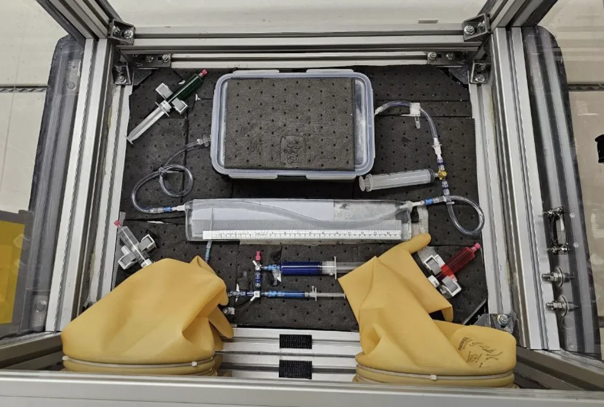
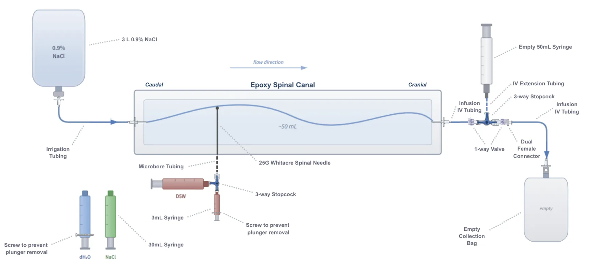

Project-state images — CAN-RGX (CLOT-LESS).
Portfolio — Adrian Tabari
Accepted IAC 2026 abstract (A1.3.9).
Software in progress.
About the project
CLOT-LESS investigates how microgravity changes the way the clot-busting drug alteplase dissolves blood clots — a credible medical emergency on long-duration spaceflight. A compact, flight-qualified microfluidic platform measures clot-resistance decay in real time aboard a parabolic flight, working toward evidence-informed autonomous medical care in deep space.
About the project
On Earth, the spread of a spinal (intrathecal) anaesthetic is strongly shaped by gravity acting on a solution's density — its baricity — a major source of variability in how high a spinal block rises. This project asked what changes in microgravity, where that gravitational layering largely disappears. Aboard an ESA / Novespace parabolic flight, an epoxy spinal-canal model compared the cephalad (headward) spread of three injectates of differing baricity — 5% dextrose, normal saline, and distilled water — under Earth gravity (1g) versus microgravity (0g).
Results
Under 1g, the injectates separated by baricity, as expected. In microgravity that separation was markedly attenuated: distributions converged to a similar, limited spread regardless of injectate — becoming momentum-limited and largely baricity-independent. Clinically, this convergence could reduce unpredictable excessive spread, but it also limits the ability to tune block height through a drug's baricity.


Experimental setup.
IAC presentation.
ESA/Novespace parabolic flight.
Parabolic flight — onboard footage.
Canadian Space Conference poster.